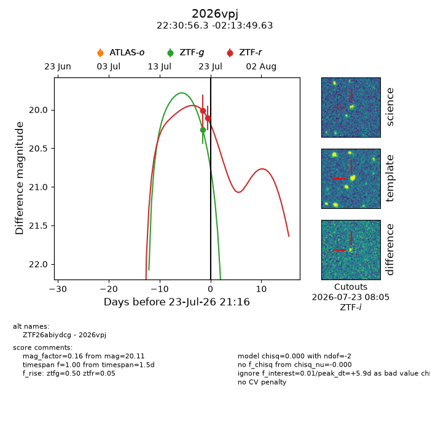
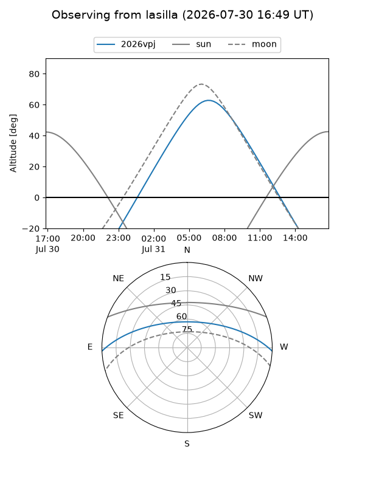
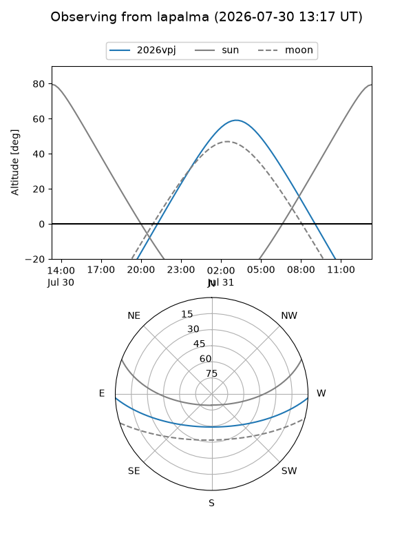
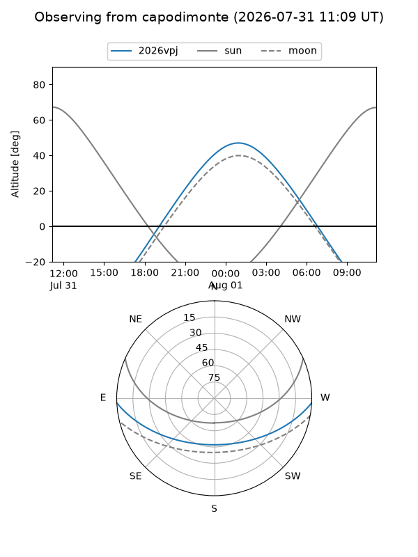
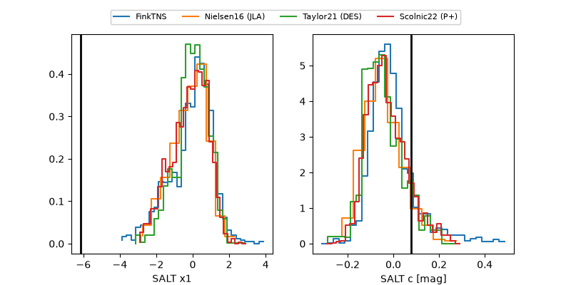

2026vpj
Target 2026vpj at 2026-07-23 21:19
Aliases and brokers:
FINK-ZTF: ztf.fink-portal.org/ZTF26abiydcg
Lasair-ZTF: lasair-ztf.lsst.ac.uk/objects/ZTF26abiydcg
ALeRCE-ZTF: alerce.online/object/ZTF26abiydcg
YSE-PZ: ziggy.ucolick.org/yse/transient_detail/2026vpj
TNS name: wis-tns.org/object/2026vpj
Direct TNS query: direct search
alt names
ZTF26abiydcg (ztf,fink_ztf)
2026vpj (tns,yse)
Coordinates:
equatorial (ra, dec) = 337.7346,-2.23045
equatorial (HMS+DMS) = 22:30:56.31,-02:13:49.63
galactic (l, b) = (63.3855,-48.16909)
Flags:
peak dt: +5.9
Photometry:
last ztfg=20.26, ztfr=20.11
1 ztfg, 2 ztfr detections
Lightcurve

Visibility



Additional plots
